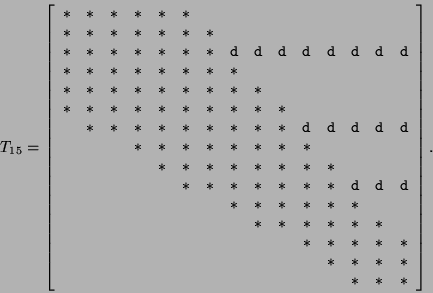
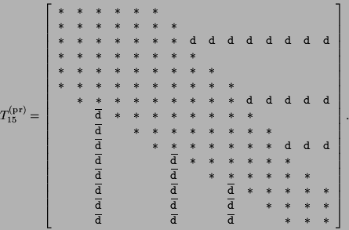

下一节：算法
上一级：带状Lanczos方法
上一节：收缩的必要性
基本性质
经过前j次迭代后，带状Lanczos算法已经生成了前j个Lanczos向量(4.28)。这些向量被构造为正交归一的：
V_j^{\ast} V_j = I_j,\quad \mathrm{其中}\quad V_j = \left[ \begin{array}{cccc}v_1 & v_2 & \cdots & v_j\end{array} \right]. \tag{4.29}
这里，I_j表示j\times j的单位矩阵。
除了(4.28)，算法还构造了向量
\hat{v}_{j+1},\hat{v}_{j+2},\ldots,\hat{v}_{j+p_c}, \tag{4.30}
这些向量是接下来p_c个Lanczos向量的候选，
v_{j+1},v_{j+2},\ldots,v_{j+p_c}。
这里，p_c是起始向量数p减去在前j次迭代中发生的缩减次数。
向量(4.30)被构造为满足正交关系
V_j^{\ast} \hat{v}_{k} = 0 \quad \mathrm{对于所有}\quad k=j+1,j+2,\ldots,j+p_c. \tag{4.31}
带状Lanczos算法内置了一个基于向量(4.30)的简单缩减过程。
实际上，在第j+1次迭代时的精确缩减等价于
\hat{v}_{j+1}=0。
因此，在算法中，检查 \left\Vert\hat{v}_{j+1}\right\Vert _2
是否小于某个合适的缩减容差。
如果是，向量\hat{v}_{j+1}被缩减，p_c减1。
否则，\hat{v}_{j+1}被归一化为下一个Lanczos向量v_{j+1}。
算法中用于生成向量(4.28)和(4.30)的递推关系可以紧凑地总结如下：
A V_j = V_j T_j + \begin{bmatrix} 0 & \cdots & 0 & \hat{v}_{j+1} & \hat{v}_{j+2} & \cdots & \hat{v}_{j+p_c}\end{bmatrix} + \hat{V}_j^{\rm {(dl)}}. \tag{4.32}
这里，T_j是一个j\times j矩阵，其元素被选择以满足正交条件(4.29)和(4.31)。
矩阵
\hat{V}_j^{\rm {(dl)}}在(4.32)中包含大多数零列，以及在前j次迭代中被缩减的未归一化向量。
回想一下，p-p_c是被缩减向量的数量。
事实证明，只需在2p_c+1个连续的Lanczos向量之间显式强制正交性，一旦发生缩减，还需对p-p_c个固定早期向量进行正交。
因此，矩阵T_j“基本上”是带状的，带宽为2p_c+1，每次缩减时带宽减少2。
此外，每次不精确缩减都会导致T_j在带状部分之外和右侧的固定行中具有非零元素。
更准确地说，由缩减引起的每个这样的行的行索引由k - p_c(k)给出，其中k是发生缩减的迭代次数，p_c(k)是该迭代时的相应p_c值。
因此，矩阵T_j可以写成
T_j = T_j^{\rm {(b)}} + T_j^{\rm {(d)}}, \tag{4.3}
其中
T_j^{\rm {(b)}}是一个带状矩阵，
T_j^{\rm {(d)}}
包含由于缩减而在T_j带状部分之外的水平“尖峰”。
特别是，如果没有发生不精确缩减，那么
T_j^{\rm {(d)}}
是零矩阵。
最后，我们注意到T_j的带状部分
T_j^{\rm {(b)}}是
一个厄米矩阵。
例如，考虑p=5个起始向量的情况，并假设在前j=15次迭代中，在步骤k=8、k=11和k=13处发生了缩减。
这三个缩减对应于从块Krylov序列(4.27)中删除向量A b_3、A^2 b_2和A^3 b_1，以及这些向量的后续A倍数。
在这种情况下，矩阵
T_{15}=T_{15}^{\rm {(b)}} + T_{15}^{\rm {(d)}}
具有以下稀疏结构：

这里，{*}表示带状部分
T_{15}^{\rm {(b)}}内可能非零的条目，
{\tt d}表示由于在迭代k=8、k=11和k=13处缩减而导致的
T_{15}^{\rm {(d)}}内可能非零的条目。
注意，这三个缩减已将初始带宽2p+1=11减少到迭代j=15时的2p_c+1=5。
经过j次带状Lanczos算法迭代后，通过计算
T_j^{\rm {(pr)}}的特征解，可以得到厄米特征值问题(4.25)的近似特征解，
T_j^{\rm {(pr)}} z_i^{(j)} = \theta_i^{(j)} z_i^{(j)},\quad i=1,2,\ldots,j.
这里，
T_j^{\rm {(pr)}}是A在Lanczos基矩阵V_j所张成的空间上的投影，即
T_j^{\rm {(pr)}} = V_j^{\ast} A V_j. \tag{4.35}
每个值
\theta_i^{(j)}及其Ritz向量，
x_i^{(j)} = V_j z_i^{(j)}，产生A的一个近似特征对。
当然，矩阵
T_j^{\rm {(pr)}}不是通过其定义(4.35)计算的。
相反，我们使用公式
T_j^{\rm {(pr)}} = T_j + \left(T_j^{\rm {(d)}}\right)^{\ast}. \tag{4.36}
通过(4.36)，我们只需共轭并转置T_j带状部分之外的部分，并将其添加到T_j中以获得
T_j^{\rm {(pr)}}。
为了证明(4.36)确实成立，注意通过从左侧乘以V_j^{\ast}并使用正交关系(4.29)和(4.31)，我们得到
T_j^{\rm {(pr)}} = V_j^{\ast} A V_j = T_j + S_j, \quad \mathrm{其中}\quad S_j = V_j^{\ast} \hat{V}_j^{\rm {(dl)}}. \tag{4.37}
由于矩阵
T_j^{\rm {(pr)}}和
T_j^{\rm {(b)}}都是
厄米的，因此从(4.33)可以得出
S_j = (T_j^{\rm {(d)}})^{\ast}在(4.37)中。
因此(4.37)简化为(4.36)。
例如，对于(4.34)中的T_{15}，相关的矩阵
T_{15}^{(\rm pr)} = T_{15} + (T_{15}^{\rm {(d)}})^{\ast}
具有以下形式

这里，\overline{{\tt d}}在带状部分下方是通过共轭并转置(4.34)中带状部分上方的相应条目获得的。
我们注意到，在(4.38)中，带状部分之外的条目{\tt d}和
\overline{{\tt d}}通常很小。
更准确地说，如果使用下面的缩减准则(4.42)，那么所有{\tt d}和
\overline{{\tt d}}的绝对值都被缩减容差{\tt dtol}所限制。
尽管这些条目很小，但将它们设置为零会引入不必要的误差。
实际上，投影性质(4.35)对于
T_{j}^{\rm {(pr)}}
仅在带状部分之外的所有条目{\tt d}和
\overline{{\tt d}}都包含在
T_{j}^{\rm {(pr)}}中时成立。
最后，我们注意到带状Lanczos算法在达到p_c=0时终止。
这意味着已经发生了p次缩减，因此块Krylov序列被耗尽。
由于p_c=0导致的终止，Lanczos向量的关系(4.32)简化为
A V_j = V_j T_j + \hat{V}_j^{\rm {(dl)}}. \tag{4.39}
使用(4.37)，我们可以将(4.39)重写为
A V_j - V_j T_j^{\rm {(pr)}} =\left(I - V_j V_j^{\ast} \right) \hat{V}_j^{\rm {(dl)}}. \tag{4.40}
现在让
\theta_i^{(j)}和z_i^{(j)}是
T_j^{\rm {(pr)}}的任意特征对，并假设z_i^{(j)}被归一化
使得
\Vert z_i^{(j)}\Vert _2 = 1。
回想一下，对
\theta_i^{(j)}和
x_i^{(j)} = V_j z_i^{(j)}
被用作A的近似特征解。
通过从右侧乘以z_i^{(j)}并取范数，可以得出近似特征解
\theta_i^{(j)}和x_i^{(j)}的残差可以被限制为
\left\Vert A x_i^{(j)} - \theta_i^{(j)} x_i^{(j)} \right\Vert_2 = \left\Vert(I-V_jV^*_j)\hat{V}_j^\text{(dl)} z_i^{(j)}\right\Vert_2\leq \left\Vert \hat{V}_j^{\rm {(dl)}} \right\Vert_2. \tag{4.41}
特别是，如果仅执行精确缩减，那么
\hat{V}_j^{\rm {(dl)}} = 0，并且(4.41)表明
T_j^{\rm {(pr)}}的每个特征值
\theta_i^{(j)}确实是A的特征值。
对于一般缩减，
\hat{V}_j^{\rm {(dl)}}\not=0，然而，
\Vert \hat{V}_j^{\rm {(dl)}} \Vert _2的量级
是缩减容差。
更准确地说，如果使用下面的缩减检查(4.42)，那么
\left\Vert \hat{V}_j^{\rm {(dl)}} \right\Vert _2 \leq\sqrt{p} \; {\tt dtol},
其中{\tt dtol}表示缩减容差。
下一节：算法
上一级：带状Lanczos方法
上一节：收缩的必要性
Susan Blackford
2000-11-20